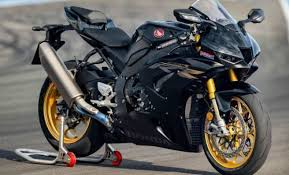
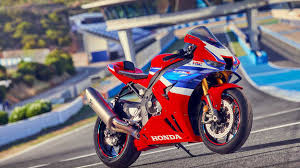

CBR1000RR-R
| Marca |
Modelo |
Ano |
Preço |
Oleo |
| Honda |
CBR1000RR-R |
2019-atual |
R$210.423,00 |
SAE 10W-30 ou 0W-30 |
- Curiosidade 1: O motor foi desenvolvido com forte inspiração na RC213V-S, inclusive compartilhando diâmetro e curso com essa moto derivada da MotoGP.
- Curiosidade 2: A Honda apresentou a RR-R como a Fireblade mais potente já feita pela marca na estreia dessa geração.
- Curiosidade 3: Ela usa um sistema de Two Motor Throttle By Wire, que a Honda destaca como uma estreia em produção em massa da marca.
- Curiosidade 4: Torque: 11,52 kgf.m a 12500 rpm

